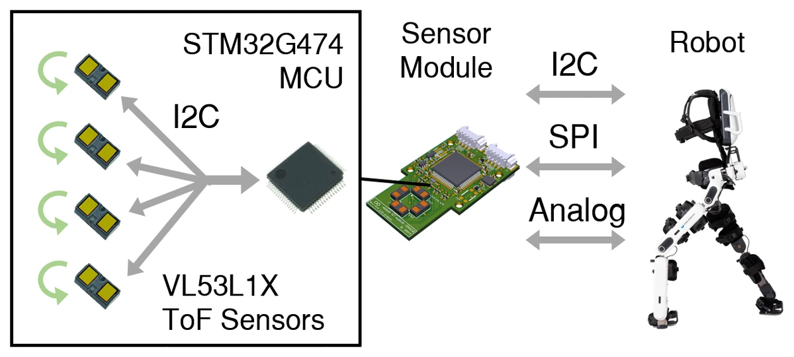
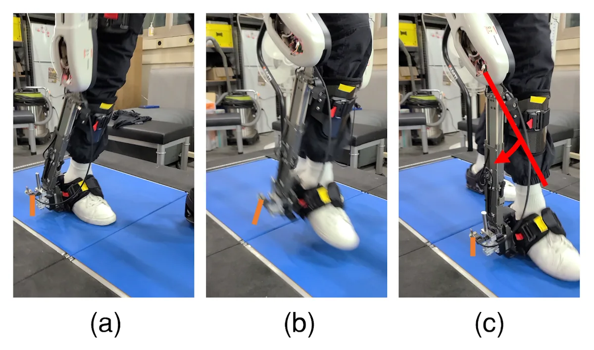
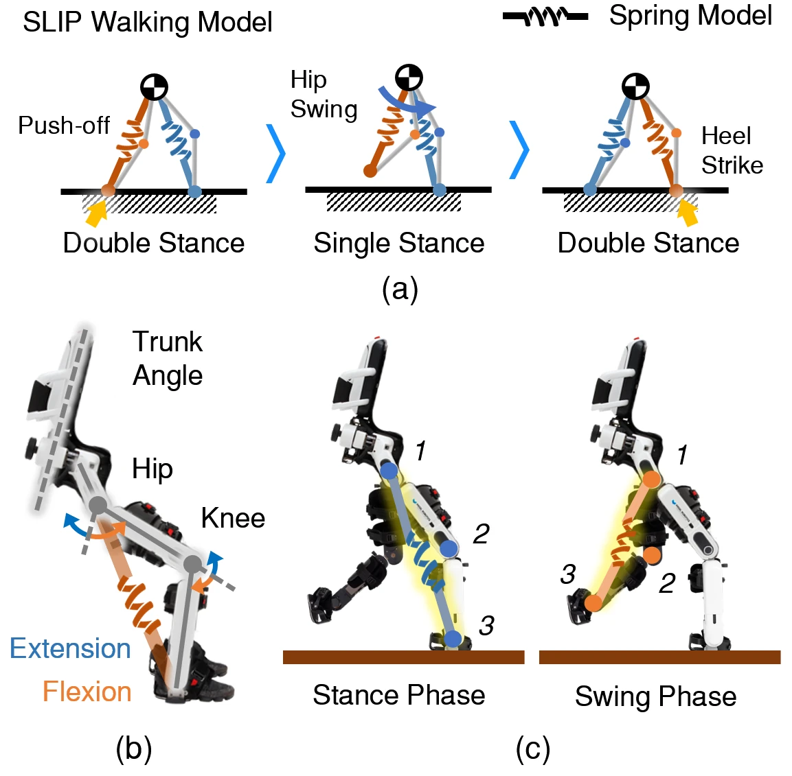

01
Foot–ground distance sensing
Time-of-flight (ToF) sensors measure foot–ground distance during walking. The distance signal remains available during swing, complementing pressure-based measurements during stance.
Real-time gait-phase detection
What I did
Designed an overshoe-type module with two ToF sensors, near the lateral heel and the fifth metatarsophalangeal (MTP) joint, and a lightweight threshold-based algorithm that segments gait phases in real time [J1]. A 2021 presentation covered full-phase detection with multi-modal sensor-integrated shoes [T1].
Evaluation
Tested with one healthy participant walking on a flat indoor floor. Compared gait-phase estimates with pressure-based measurements and recorded foot–ground distance during swing [J1].
Preparing an exoskeleton for ground contact
What I did
Designed and built a foot–ground distance module (custom PCB, four ToF sensors, STM32 microcontroller) and integrated it into the Angel Legs M20 exoskeleton. On top of it I implemented a layer that uses the distance signal to retune the joint’s virtual spring and damper before the foot lands, and ran walking experiments over tandem force plates with the layer off and at two settings. This was my M.S. thesis, Terminal Decision Maker Against Upcoming Surface for the Safe Locomotion of Wearable Robots.
Status
A manuscript, FDL: Foot–Ground Distance Layer for Initial-Contact Load Modulation in a Lower-Limb Exoskeleton, is in preparation [M1]. It builds on the thesis experiments.


